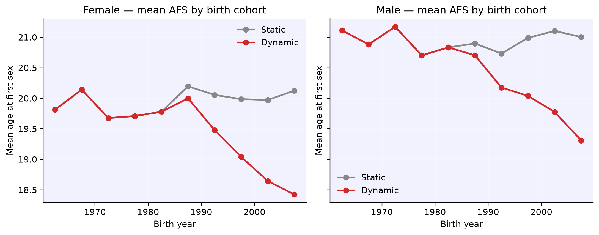

import numpy as np
import pandas as pd
import sciris as sc
import starsim as ss
import stisim as sti
import hivsim
import matplotlib.pyplot as plt
sc.options(dpi=110)
np.random.seed(0)Time-varying age at sexual debut
New in v1.5.4
Age at first sex (AFS) has changed markedly in many settings — in Sub-Saharan Africa, for example, DHS surveys consistently show a downward drift in median AFS over recent decades. This example shows how to model that drift in STIsim using callable parameters: instead of a static mean, we pass a function that returns the mean at each simulation time.
This works because the underlying Starsim distributions accept any parameter as either a scalar, an array, or a callable of sim / uids. STIsim plumbs the debut_f and debut_m distributions straight through, so anything you can express as a distribution parameter works here — linear trends, sigmoids, DHS-fitted splines, you name it.
Setup
We’ll use a simple HIV sim spanning 1985-2025 with 10,000 agents, and compare two scenarios: a static debut distribution (default) vs a dynamic one whose mean declines linearly from 20 to 17 over the simulation period.
Baseline: static debut
In the default StructuredSexual network, debut_f and debut_m are lognormal distributions with a fixed mean (20 for women, 21 for men). Everyone who enters the simulation — at init or via births — draws their age of first sex from the same distribution.
For simple overrides, you can pass a scalar (e.g. debut_f=18) and the default standard deviation is preserved. For anything more flexible (custom std, a different distribution family, or a callable mean), pass a full ss.lognorm_ex(...) instead — see the next cell.
def make_sim(debut_f, debut_m, label):
sim = hivsim.demo(
'simple', run=False,
n_agents=10_000, start=1985, stop=2025, rand_seed=1, verbose=0,
debut_f=debut_f, debut_m=debut_m,
)
sim.label = label
return sim
sim_static = make_sim(debut_f=20, debut_m=21, label='Static')Time-varying debut
Now we define a callable that returns the mean age at debut as a function of the current simulation year. The function can take any of sim, self / module, uids, size, pars, states as arguments — Starsim introspects the signature and passes what’s asked for.
Here we keep it simple: linear decline from 20 in 1985 down to 17 by 2025, floored at 17 for any time outside the window.
def mean_afs_f(sim):
# Linear decline: 20 in 1985, 17 in 2025, clipped outside
return float(np.clip(20 - 0.075 * (sim.now.years - 1985), 17, 20))
def mean_afs_m(sim):
return float(np.clip(21 - 0.075 * (sim.now.years - 1985), 18, 21))
sim_dynamic = make_sim(
debut_f=ss.lognorm_ex(mean=mean_afs_f, std=3),
debut_m=ss.lognorm_ex(mean=mean_afs_m, std=3),
label='Dynamic',
)Run and compare
We run both sims in parallel, then compute mean debut age by birth-year cohort. In the static sim, cohorts should look identical. In the dynamic sim, later cohorts should show progressively lower mean AFS.
msim = ss.parallel(sim_static, sim_dynamic)
def afs_by_cohort(sim, cohort_bin=5):
ppl = sim.people
net = sim.networks.mfnetwork
# .values gives numpy arrays for active agents only
debut = net.debut.values
age = ppl.age.values
female = ppl.female.values
born = sim.now.years - age
# Keep only agents who have debuted
has_debut = debut > 0
born = born[has_debut]
debut = debut[has_debut]
female = female[has_debut]
bin_edges = np.arange(1960, 2011, cohort_bin)
bin_centers = bin_edges[:-1] + cohort_bin / 2
out = {}
for sex_name, mask in [('Female', female), ('Male', ~female)]:
means = []
for lo, hi in zip(bin_edges[:-1], bin_edges[1:]):
in_bin = mask & (born >= lo) & (born < hi)
means.append(np.nan if not in_bin.any() else debut[in_bin].mean())
out[sex_name] = np.array(means)
return bin_centers, out
cohorts_static, means_static = afs_by_cohort(msim.sims[0])
cohorts_dynamic, means_dynamic = afs_by_cohort(msim.sims[1])Initializing sim "Static" with 10000 agents
Initializing sim "Dynamic" with 10000 agents
Running "Static": 1985.01.01 ( 0/481) (0.00 s) ———————————————————— 0%
Running "Dynamic": 1985.01.01 ( 0/481) (0.00 s) ———————————————————— 0%
Running "Static": 1986.01.01 (12/481) (0.64 s) ———————————————————— 3%
Running "Dynamic": 1986.01.01 (12/481) (0.64 s) ———————————————————— 3%
Running "Static": 1987.01.01 (24/481) (1.06 s) •——————————————————— 5%
Running "Dynamic": 1987.01.01 (24/481) (1.06 s) •——————————————————— 5%
Running "Static": 1988.01.01 (36/481) (1.49 s) •——————————————————— 8%
Running "Dynamic": 1988.01.01 (36/481) (1.49 s) •——————————————————— 8%
Running "Static": 1989.01.01 (48/481) (1.92 s) ••—————————————————— 10%
Running "Dynamic": 1989.01.01 (48/481) (1.92 s) ••—————————————————— 10%
Running "Static": 1990.01.01 (60/481) (2.35 s) ••—————————————————— 13%
Running "Dynamic": 1990.01.01 (60/481) (2.34 s) ••—————————————————— 13%
Running "Static": 1991.01.01 (72/481) (2.79 s) •••————————————————— 15%
Running "Dynamic": 1991.01.01 (72/481) (2.78 s) •••————————————————— 15%
Running "Static": 1992.01.01 (84/481) (3.24 s) •••————————————————— 18%
Running "Dynamic": 1992.01.01 (84/481) (3.23 s) •••————————————————— 18%
Running "Static": 1993.01.01 (96/481) (3.70 s) ••••———————————————— 20%
Running "Dynamic": 1993.01.01 (96/481) (3.69 s) ••••———————————————— 20%
Running "Static": 1994.01.01 (108/481) (4.16 s) ••••———————————————— 23%
Running "Dynamic": 1994.01.01 (108/481) (4.15 s) ••••———————————————— 23%
Running "Static": 1995.01.01 (120/481) (4.60 s) •••••——————————————— 25%
Running "Dynamic": 1995.01.01 (120/481) (4.59 s) •••••——————————————— 25%
Running "Static": 1996.01.01 (132/481) (5.03 s) •••••——————————————— 28%
Running "Dynamic": 1996.01.01 (132/481) (5.02 s) •••••——————————————— 28%
Running "Static": 1997.01.01 (144/481) (5.46 s) ••••••—————————————— 30%
Running "Dynamic": 1997.01.01 (144/481) (5.45 s) ••••••—————————————— 30%
Running "Static": 1998.01.01 (156/481) (5.89 s) ••••••—————————————— 33%
Running "Dynamic": 1998.01.01 (156/481) (5.87 s) ••••••—————————————— 33%
Running "Static": 1999.01.01 (168/481) (6.31 s) •••••••————————————— 35%
Running "Dynamic": 1999.01.01 (168/481) (6.29 s) •••••••————————————— 35%
Running "Dynamic": 2000.01.01 (180/481) (6.72 s) •••••••————————————— 38%
Running "Static": 2000.01.01 (180/481) (6.74 s) •••••••————————————— 38%
Running "Dynamic": 2001.01.01 (192/481) (7.15 s) ••••••••———————————— 40%
Running "Static": 2001.01.01 (192/481) (7.17 s) ••••••••———————————— 40%
Running "Static": 2002.01.01 (204/481) (7.61 s) ••••••••———————————— 43%
Running "Dynamic": 2002.01.01 (204/481) (7.59 s) ••••••••———————————— 43%
Running "Static": 2003.01.01 (216/481) (8.07 s) •••••••••——————————— 45%
Running "Dynamic": 2003.01.01 (216/481) (8.05 s) •••••••••——————————— 45%
Running "Static": 2004.01.01 (228/481) (8.54 s) •••••••••——————————— 48%
Running "Dynamic": 2004.01.01 (228/481) (8.52 s) •••••••••——————————— 48%
Running "Static": 2005.01.01 (240/481) (9.02 s) ••••••••••—————————— 50%
Running "Dynamic": 2005.01.01 (240/481) (9.00 s) ••••••••••—————————— 50%
Running "Static": 2006.01.01 (252/481) (9.48 s) ••••••••••—————————— 53%
Running "Dynamic": 2006.01.01 (252/481) (9.47 s) ••••••••••—————————— 53%
Running "Static": 2007.01.01 (264/481) (9.95 s) •••••••••••————————— 55%
Running "Dynamic": 2007.01.01 (264/481) (9.95 s) •••••••••••————————— 55%
Running "Static": 2008.01.01 (276/481) (10.44 s) •••••••••••————————— 58%
Running "Dynamic": 2008.01.01 (276/481) (10.44 s) •••••••••••————————— 58%
Running "Static": 2009.01.01 (288/481) (10.92 s) ••••••••••••———————— 60%
Running "Dynamic": 2009.01.01 (288/481) (10.93 s) ••••••••••••———————— 60%
Running "Static": 2010.01.01 (300/481) (11.39 s) ••••••••••••———————— 63%
Running "Dynamic": 2010.01.01 (300/481) (11.41 s) ••••••••••••———————— 63%
Running "Static": 2011.01.01 (312/481) (11.86 s) •••••••••••••——————— 65%
Running "Dynamic": 2011.01.01 (312/481) (11.89 s) •••••••••••••——————— 65%
Running "Static": 2012.01.01 (324/481) (12.33 s) •••••••••••••——————— 68%
Running "Dynamic": 2012.01.01 (324/481) (12.37 s) •••••••••••••——————— 68%
Running "Static": 2013.01.01 (336/481) (12.80 s) ••••••••••••••—————— 70%
Running "Dynamic": 2013.01.01 (336/481) (12.85 s) ••••••••••••••—————— 70%
Running "Static": 2014.01.01 (348/481) (13.30 s) ••••••••••••••—————— 73%
Running "Dynamic": 2014.01.01 (348/481) (13.34 s) ••••••••••••••—————— 73%
Running "Static": 2015.01.01 (360/481) (13.78 s) •••••••••••••••————— 75%
Running "Dynamic": 2015.01.01 (360/481) (13.82 s) •••••••••••••••————— 75%
Running "Static": 2016.01.01 (372/481) (14.26 s) •••••••••••••••————— 78%
Running "Dynamic": 2016.01.01 (372/481) (14.30 s) •••••••••••••••————— 78%
Running "Static": 2017.01.01 (384/481) (14.74 s) ••••••••••••••••———— 80%
Running "Dynamic": 2017.01.01 (384/481) (14.77 s) ••••••••••••••••———— 80%
Running "Static": 2018.01.01 (396/481) (15.23 s) ••••••••••••••••———— 83%
Running "Dynamic": 2018.01.01 (396/481) (15.26 s) ••••••••••••••••———— 83%
Running "Static": 2019.01.01 (408/481) (15.71 s) •••••••••••••••••——— 85%
Running "Dynamic": 2019.01.01 (408/481) (15.75 s) •••••••••••••••••——— 85%
Running "Static": 2020.01.01 (420/481) (16.20 s) •••••••••••••••••——— 88%
Running "Dynamic": 2020.01.01 (420/481) (16.23 s) •••••••••••••••••——— 88%
Running "Static": 2021.01.01 (432/481) (16.68 s) ••••••••••••••••••—— 90%
Running "Dynamic": 2021.01.01 (432/481) (16.72 s) ••••••••••••••••••—— 90%
Running "Static": 2022.01.01 (444/481) (17.17 s) ••••••••••••••••••—— 93%
Running "Dynamic": 2022.01.01 (444/481) (17.22 s) ••••••••••••••••••—— 93%
Running "Static": 2023.01.01 (456/481) (17.67 s) •••••••••••••••••••— 95%
Running "Dynamic": 2023.01.01 (456/481) (17.71 s) •••••••••••••••••••— 95%
Running "Static": 2024.01.01 (468/481) (18.17 s) •••••••••••••••••••— 98%
Running "Dynamic": 2024.01.01 (468/481) (18.21 s) •••••••••••••••••••— 98%
Running "Static": 2025.01.01 (480/481) (18.66 s) •••••••••••••••••••• 100%
Running "Dynamic": 2025.01.01 (480/481) (18.71 s) •••••••••••••••••••• 100%
Visualize
Plot mean AFS by birth-year cohort for both scenarios and both sexes.
with sc.options.with_style('fancy'):
fig, axes = plt.subplots(1, 2, figsize=(10, 4), sharey=True)
colors = {'Static': '#888', 'Dynamic': '#d62728'}
for ax, sex in zip(axes, ['Female', 'Male']):
ax.plot(cohorts_static, means_static[sex], 'o-', color=colors['Static'], label='Static')
ax.plot(cohorts_dynamic, means_dynamic[sex], 'o-', color=colors['Dynamic'], label='Dynamic')
ax.set_title(f'{sex} — mean AFS by birth cohort')
ax.set_xlabel('Birth year')
ax.set_ylabel('Mean age at first sex')
ax.grid(alpha=0.3)
ax.legend()
fig.tight_layout()
plt.show()
Key takeaways
- Distribution parameters are callables — anything starsim accepts (scalars, arrays, or functions of
sim/uids) works fordebut_fanddebut_m. - Use what fits your data — a linear trend like the above, a sigmoid, or a spline fit to DHS indicators all plug in identically.
- No subclassing required — time-varying behavior is just a callable passed at network construction. Same pattern extends to other distribution parameters in the network (age differences, concurrency, relationship durations, etc.).
- Be bounded — because callables are unconstrained, use
np.clipor similar to keep the trend physically plausible over your simulation window.